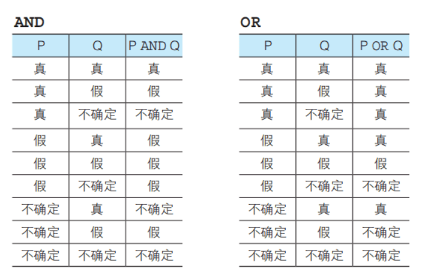
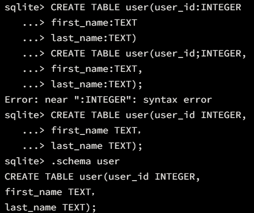
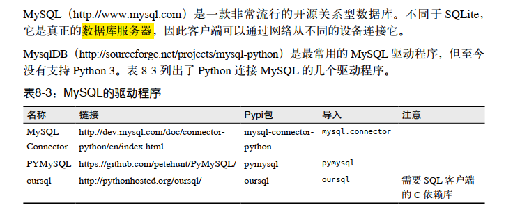
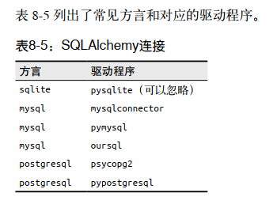

SQL
关系型数据库的命名是因为数据库展现了表单形式的不同类型数据之间的关系。
SQL是结构化数据查询语言，是我们用来像数据管理系统（Data Management system）下达指令时用到的.
Sqlite是一个轻量的DBMS。
SQL
SQL既不是一个API也不是一种协议，而是一种声明式语言，只需要告诉它做什么即可。
它是关系型数据库的通用语言。SQL查询是客户端发送给数据库服务器的文本字符串，指
明需要执行的具体操作。
-
SQL is everywhere
-
SQL enables us to pull data from many sources
SQL语句的三种类型：
-
DDL（Data Definition Language，数据定义语言）：处理用户、数据库以及表单的创建、删除、约束和权限等
-
DML（Data Manipulation Language，数据操纵语言） 用来查询或者变更表中的记录。
-
DCL（Data Control Language，数据控制语言） 用来确认或者取消对数据库中的数据进行的变更。除此之外，还可以对 RDBMS 的用户是否有权限操作数据库中的对象（数据库表等）进行设定。DCL 包含以下几种指令。
-
COMMIT ： 确认对数据库中的数据进行的变更
-
ROLLBACK ： 取消对数据库中的数据进行的变更
-
GRANT ： 赋予用户操作权限
-
REVOKE ： 取消用户的操作权限
-
基本的DDL命令
| 创建数据库 | CREATE DATEBASE dbname |
|---|---|
| 选择当前数据库 | USE dbname |
| 删除数据库以及表单 | DROP DATABASE dbname |
| 创建表单（） | CREATE TABLE tbname （col defs） |
| 删除表单 | DROP TABLE tbname |
| 删除表单中的所有行 | TRUNCATE TABLE tbname |
| 修改数据库和表的结构 | ALTER |
DML命令
| 增加行 | INSERT INTO tbname VALUES（） |
|---|---|
| 增加行的部分内容 | INSERT INTO user(col_name) VALUES（） |
| （限制返回2-5行）查询所有行和所有列 | SELECT * FROM tbname（LIMIT 2,5） |
| 选择部分行和部分列 | SELECT col_name FROM tbname WHERE condition |
| 修改一列的部分行 | UPDATE tbname SET col_name=value WHERE condition |
| 删除部分行 | DELETE FROM tbname WHERE condition |
| 查询部分（不重复） | SELECT DISTINCT |
| 限制显示的行数 | limit 3 |
| 查询表长 | count(*)避免缺失值的影响 |
| 查询值命名 | AS 列名可以紧跟在列后边，加一个’’（提倡） #SElECT SUM(Total) ‘Total Students’ FROM recent_grads 名称有空格也要加’’ #SELECT SUM(Total) AS ‘Total Students’ FROM recent_grads |
列名也可以用数字代替（表的索引）
基本书写规则
-
语句以；结束
-
不区分关键字的大小写，插入表中的数据除外
-
win系统不区分表名和字段名的大小写
-
linux/mac区分
表的创建
CREATE TABLE < 表名 >
( < 列名 1> < 数据类型 > < 该列所需约束 > ,
< 列名 2> < 数据类型 > < 该列所需约束 > ,
< 列名 3> < 数据类型 > < 该列所需约束 > ,
< 列名 4> < 数据类型 > < 该列所需约束 > ,
.
.
.
< 该表的约束 1> , < 该表的约束 2> ,……);约束条件主要分为两种：
-
非空约束：NOT NULL
-
主键约束:PRIMARY KEY
-
默认值约束：DEFAULT
数据类型：
-
INTEGER
-
CHAR
-
VARCHAR
-
DATE
表的删除和更新
表的删除：
DROP TABLE <表名>表的修改（ALTER TABLE）：
ALTER TABLE和DROP TABLE一样会删除整张表，但是ALTER TABLE可以进行列的增删
添加列：**ALTER** **TABLE** **<** 表名 **>** ADD COLUMN **<** 列的定义 **>**
删除列：**ALTER** **TABLE** **<** 表名 **>** **DROP** COLUMN **<** 列名 **>**;
表的清空
TRUNCATE **TABLE** TABLE_NAME;
优点：相比drop/delete，truncate用来清除数据时，速度最快。
插入数据
**INSERT** **INTO** **<**表名**>** (列1, 列2, 列3, ……) **VALUES** (值1, 值2, 值3, ……);
对表进行全列 INSERT 时，可以省略表名后的列清单。这时 VALUES子句的值会默认按照从左到右的顺序赋给每一列。
很多RDBMS也支持同时插入多行数据：
-- Oracle中的多行INSERT
INSERT ALL INTO productins VALUES ('0002', '打孔器', '办公用品', 500, 320, '2009-09-11')
INTO productins VALUES ('0003', '运动T恤', '衣服', 4000, 2800, NULL)
INTO productins VALUES ('0004', '菜刀', '厨房用具', 3000, 2800, '2009-09-20')数据的更新
UPDATE <表名>
SET <列名> = <表达式> [, <列名2>=<表达式2>...];
WHERE <条件>; -- 可选，非常重要。
ORDER BY 子句; --可选
LIMIT 子句; --可选extract data from databases
数据运算与比较
常用的计算函数
-
AVG()
-
SUM（col_name,int）
-
ROUND（）:向下取整
-
CAST（col_name AS Float）:整数列转化为实数列
算术运算与比较运算
- IN：通常写在where从句中，用于匹配，也可以写进去subquery
SELECT Major_category, Major
FROM recent_grads
WHERE Major_category IN
(
SELECT Major_category
FROM recent_grads
GROUP BY Major_category
ORDER BY SUM(TOTAL) DESC
LIMIT 3
)逻辑运算
SQL的逻辑运算并不只是简单的True和False的逻辑运算，因为SQL中可能出现的一种数据值为NULL。这使得SQL的逻辑运算变成了三值逻辑：

字符串函数
-
常用的有一个函数是LENGTH()，返回字符串长度
-
还有一个是拼接函数‘||’，‘A||B’表示的是将字符串A和B拼接起来，既可以是列名（文本列）也可以是字符串，但是单引号应用更广泛
-
LOWER()
SELECT 'Major: '||LOWER(Major) AS Major,Total,Men,Women,Unemployment_rate,LENGTH(Major) AS Length_of_name
FROM recent_grads
ORDER BY Unemployment_rate DESC;字符串的模糊匹配（LIKE字句）
在处理字符串相关的列时，往往会用到like子句：
-
where进行筛选时，可能会用到模糊匹配
-
CASE创建新的列时，可能会用到like子句
WHERE [column_name] LIKE "[pattern]"
当然也可以发现直接用列的值进行匹配，因为像是"jen"这样的值不能被匹配，在使用的时候可以考虑加一个lower（）函数
创建新的列
CASE
WHEN <condition_1> THEN <value_1>
WHEN <condition_2> THEN <value_2>
ELSE <value_3>
END AS <new_column_name>
#如果没有else，未匹配的值会被设为空值
SELECT Major,Sample_size,
CASE
WHEN Sample_size<200 THEN 'Small'
WHEN Sample_size>=200 and Sample_size<1000 THEN 'Medium'
ELSE 'Large'
END AS 'Sample_category'
FROM recent_grads分组
group by 根据指定的列进行分组，然后对每组进行操作（排序，聚合），将会显示出每一组的最后一个值
提取分组后的部分数据
在sql语句中，运行命令的顺序是：
-
FROM
-
WHERE
-
GROUP BY
-
HAVING
-
SELECT
-
ORDER BY
-
LIMIT
也就是说，我们无法用where条件句来对GroupBy的结果进行提取，这个时候就引入了having命令（发挥的其实就是where命令的作用）
subquery（complex and dynamic queries）
A subquery is a query nested within another query.
子查询可以出现在很多地方（where从句和select从句），但无论在哪都需要加’()'包围起来！

集合运算
每一个子查询可以看成一个table，table与table之间除了可以进行常见的算术运算和逻辑运算以外，SQL还增加了一些table间进行比较的运算符：
例如
SQL: SELECT player_id, player_name, height FROM player WHERE height > ANY (SELECT height FROM player WHERE team_id = 1002)可以用来将一个集合的值与另一个集合的所
Combining Colums with Joining

join命令可以用来将数据表联系起来，被联系的数据表既可以是已有的表，也可以是subquery
Inner Join
这个命令主要用来查询两个表中匹配的信息，可以理解为两个表的交集。

The inner join clause is made up of two parts:
-
INNER JOIN, which tells the SQL engine the name of the table you wish to join in your query, and that you wish to use an inner join. -
ON, which tells the SQL engine what columns to use to join the two tables.
SELECT * FROM facts AS f
INNER JOIN cities AS c ON c.facts_id = f.idLeft Join
A left join includes all the rows that an inner join will select, plus any rows from the first (or left) table that don’t have a match in the second table. We can see this represented as a Venn diagram.

该命令会把b中不匹配的一部分直接置为空值，然后如果需要调用这些不匹配的数据可以使用where从句匹配空值，这时用的是is判断

RIGHT JOIN
同时使用多张表时，可能会用到RIGHT JOIN从句

FULL JOIN
The other join type not supported by SQLite is a full outer join. A full outer join will include all rows from the tables on both sides of the join. We can see a full outer join in the Venn diagram below:

Self-join
Self-join 是将同一张表join起来的方法，一般会用做列与列之间有关系的表的查询，而且对这样的join一般只有INNER和LEFT两种方法。以一张既有劳工又有监督者的表格做例子
SELECT e1.first_name ||' '|| e1.last_name employee_name,e1.title employee_title,e2.first_name ||" "||e2.last_name supervisor_name,e2.title supervisor_title
FROM employee e1
LEFT JOIN employee e2 on e1.reports_to=e2.employee_id
ORDER BY employee_nameJoining for many tables
SELECT [column_names] FROM [table_name_one]
[join_type] JOIN [table_name_two] ON [join_constraint]
[join_type] JOIN [table_name_three] ON [join_constraint];The SQL engine interprets joins in order, so the first join will be executed, and then the second join will be executed against the result of the first join. Because of this, we can first build our query in steps:
-
with 0 joins.
-
with 1 join.
-
with 2 joins.
Combining Rows with UNION
[select_statement_one]
UNION
[select_statement_two]SQL可以通过UNION来实现列拼接，然后需要注意的是拼接前后两个查询（表格的合并可以借助select *）同一列的数据类型，int和float是兼容的，但是int和text是不兼容的。


Thinking in SQL
-
Think about what data you need in your final output
-
Work out which tables you’ll need to join, and whether you will need to join to a subquery.
- If you need to join to a subquery, write the subquery first.
-
Then start writing your SELECT clause, followed by the join and any other clauses you will need.
-
Don’t be afraid to write your query in steps, running it as you go— for instance you can run your subquery as a ‘stand alone’ query first to make sure it looks like you want before writing the outer query.
philosophy of writting SQL
在sql中大小写和空格是对查询没有影响的
-
If a select statement has more than one column, put each on a new line, indented from the select statement.
-
Always capitalize SQL function names and keywords
-
Put each clause of your query on a new line.
-
Use indenting to make subqueries appear logically separate.
-
use of alias names and shortcuts
-
换行符可以随便使用但是不要出现空行
指代一个subquery
Everything in SQL is a table
with临时指代
子查询嵌套进查询语句中会降低代码的可读性，SQL提供了WITH方法来对子查询进行一个化名（alias）
WITH [alias_name] AS ([subquery])
SELECT [main_query]
SELECT * FROM
(
SELECT
t.name,
ar.name artist,
al.title album_name,
mt.name media_type,
g.name genre,
t.milliseconds length_milliseconds
FROM track t
INNER JOIN media_type mt ON mt.media_type_id = t.media_type_id
INNER JOIN genre g ON g.genre_id = t.genre_id
INNER JOIN album al ON al.album_id = t.album_id
INNER JOIN artist ar ON ar.artist_id = al.artist_id
)
WHERE album_name = "Jagged Little Pill";WITH
[alias_name] AS ([subquery]),
[alias_name_2] AS ([subquery_2]),
[alias_name_3] AS ([subquery_3])
SELECT [main_query]一下子创建多个时每一个是独立的，可以在第二个创建时调用第一个
CREATE VIEW永久指代
我们可以理解为with命令用来定义一个临时的subquery，如果想要永久地定义一个sub，可以使用下列语句：
CREATE VIEW database.view_name AS
SELECT * FROM database.table;为了防止和其他view冲突，必须要在view_name前边声明database的名称（database_name.view/table_name），在定义的时候使用的任何数据库中的表都要在前边加上database。如果是在本地使用，则不需要写明database。
创建的一个view可以视作一个table，且不能被重写。在使用是也要写成database_name.view_name的形式。
窗口函数(Online Anallytical Processing)
SQL中的窗口函数功能很像pandas中的数据透视表所实现的功能，将已有的数据先进行分组然后再以组为单位运用特定的函数来进行操作，一般来说，窗口函数的语法为:
<窗口函数> over (partition by <用于分组的列名>
order by <用于排序的列名>)
以上相当于一个字段，一般跟在select后边实现不同的功能，窗口函数主要分为两种:
- 专用窗口函数，比如rank, dense_rank, row_number等
- 聚合函数，如sum. avg, count, max, min等
和group,order的区别(好处)
- 同时具有分组（partition by）和排序（order by）的功能
- 窗口函数的操作返回的数据不会删除行(group by)
interact with a SQLite database in Python
SQLite is a database that doesn’t require a standalone server; it stores the entire database as a file on disk. This makes it ideal for working with larger datasets that can fit on disk but not in memory.
two ways to :
-
Sqlite Shell
-
sqlite3
Sqlite Shell
sqlite shell是一个用来和sqlite进行交互的命令行窗口，接下来用它来演示如何进行数据库的创建和修改
Sqlite3 shell 写query的原则：
-
要打开sqlite shell，需要输入’sqlite3+db_file’
-
换行只表示换行含义，当输入’;'表示输入的query完毕
-
sqlite有许多点命令，可以用来进行全局设置的调整，一般情况下查询结果是不显示列名的，可以通过’.headers on’调整
-
可以通过输入’.mode column’来更改输出格式，保证每一行的列宽相等
-
常用的点命令
-
.help:显示所有点命令和功能
-
.tables:显示当前数据库的列名
-
.shell [command]:执行命令
-
.quit 退出
-
- 表的创建
在sqlite shell中，表格的创建借助CREATE TABLE命令，格式如下：
CREATE TABLE [table_name] (
[column1_name] [column1_type] PRIMARY KEY,
[column2_name] [column2_type],
[column3_name] [column3_type],
[...]
);需要注意的是sqlite支持五种（通用）数据类型：
-
TEXT
-
INTEGER
-
REAL:DOUBLE+FLOAT
-
NULL
-
BLOB：二进制
可以使用点命令’.schema [tb_name]'查看表格图解

- 表的删除
DROP TABLE [table_name];sqlite3
sqlite3是python中一个用来处理处理关系型数据库的标准库，把数据文件存储在了普通文件中。该模块是在DB-API的基础上建立的，很多地方是一致的。DB-API的主要函数：
- connect():连接数据库
When we’re connected to a database, SQLite locks the database file and prevents any other processes from connecting to the database simultaneously. The SQLite team designed the module this way to keep the database lightweight and to avoid the complexity of multiple processes interacting with the same database.
-
cursor():创建一个cursor对象管理查询，作用
-
Run a query against the database
-
Parse the results from the database
-
Convert the results to native Python objects
-
Store the results within the Cursor instance as a local variable
-
-
execute()和executemany（）:对数据库执行一个或者多个SQL命令（The SQLite library actually allows us to skip creating a Cursor altogether by using the execute method within the Connection object itself，SQLite will create a Cursor instance for us under the hood and run our query against the database, allowing us to skip a step.）
-
fetchone()、fetchmany()、fetchmany(n)：Cusor method（ Fetch the full results set as a list of tuples）
import sqlite3
con = sqlite3.connect('example.db')
cur = con.cursor()
# Create table
cur.execute('''CREATE TABLE stocks
(date text, trans text, symbol text, qty real, price real)''')
# Insert a row of data
cur.execute("INSERT INTO stocks VALUES ('2006-01-05','BUY','RHAT',100,35.14)")
# Save (commit) the changes
con.commit()
# We can also close the connection if we are done with it.
# Just be sure any changes have been committed or they will be lost.
con.close()
for row in cur.execute('SELECT * FROM stocks ORDER BY price'):
print(row)
#在不使用时，记得关闭打开的游标和连接
cur.close()
con.close()MySQL

SQLAlchemy
SQLAlchemy是python中用来消除不同数据库语言差异的一个库，虽然不在标准库当中，但是被广泛认可，使用者众多。
SQLAlchemy不需要导入驱动程序，初始化的连接字符串会做出分配，例如：
dialect + driver :// user : password @ host : port / dbnam
-
dialect: the type of db
-
driver:特殊驱动程序
-
host/port:数据服务器的位置(只有特定情况下会使用端口号port)
-
dbname:连接到的数据库名字，可以/开头表示绝对路径

以内置的sqlite为例，省略host、port等参数（引擎层）
import sqlalchemy as sa
conn=sa.create_engine('sqlite:///:memory:')SQL表达式语言
除了基础的SQL表达式语言以外，sqlalchemy还提供了多种SQL操作的函数，这种函数调用能解决不同sql语言之间的差异，对于关系型数据库应用是一种中间型方案。
from mysqlx import Column
import sqlalchemy as sa
conn=sa.create_engine('sqlite:///Mydb1')
#创建表格
meta=sa.MetaData()
Stu_info=sa.Table('Stu_info',meta,
sa.Column('Student Name',sa.String,primary_key=True),
sa.Column('Student Age',sa.INT)
)
meta.create_all(conn)
#插入数据
conn.execute(Stu_info.insert(("xiaoming",18)))
conn.execute(Stu_info.insert(("xiaohong",27)))
#select all
result=conn.execute(Stu_info.select())
rows=result.fetchall()
print(rows)对象关系映射
除了通过定义好的SQL函数来处理数据库,sqlalchemy还提供了对象关系映射(ORM)来使用SQL表达式语言,隐藏了实际数据库的机制,通过自己定义的对象,ORM负责处理如何对数据库进行相关处理.有点类似于本土化处理，让操作数据的方式与python更加接近！
import sqlalchemy as sa
from sqlalchemy.ext.declarative import declarative_base
#连接数据库
conn=sa.create_engine('sqlite:///Mydb.db')
Base=declarative_base()
class Stu_info(Base):
__tablename__='stu_info'
name=sa.Column('Student Name',sa.String,primary_key=True)
age=sa.Column('Student Age',sa.INT)
def __init__(self,name,age) -> None:
self.name=name
self.age=age
def __str__(self) -> str:
return "<Stu_info({},{})>".format(self.name,self.age)
#创建数据库和表单
Base.metadata.create_all(conn)
first=Stu_info("xiaoming",18)
second=Stu_info("xiaohong",23)
print(first)
#将创建的数据写入数据库
Session=sa.orm.sessionmaker(bind=conn)
session=Session()
session.add(first)
session.add(second)
#session.add_all([first,second])
session.commit()三个层级属于sqlalchemy不同的用法